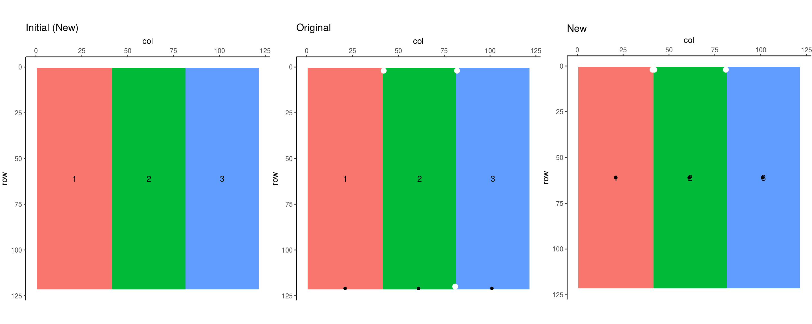
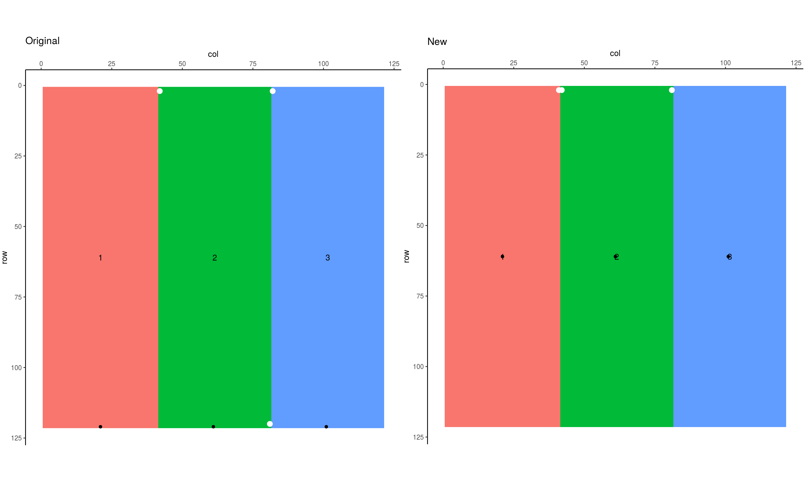
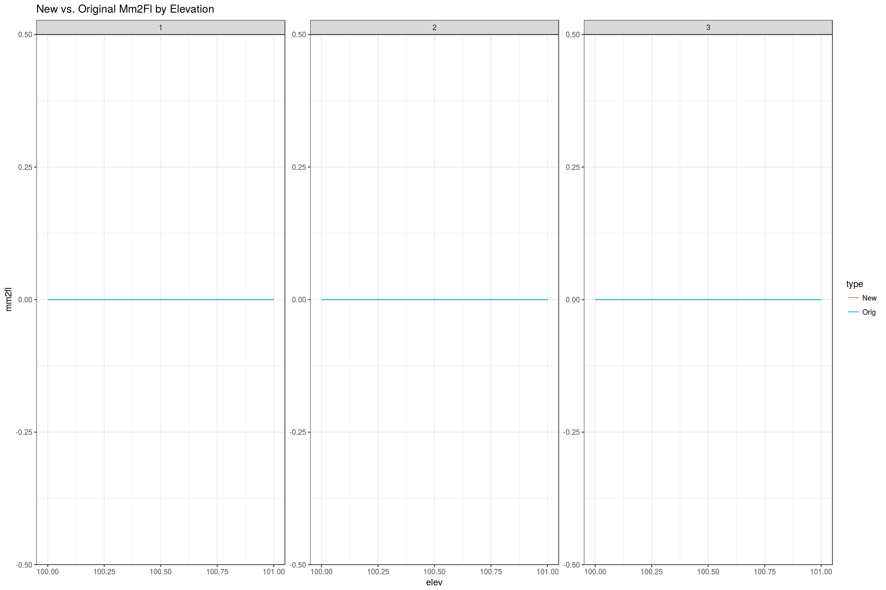
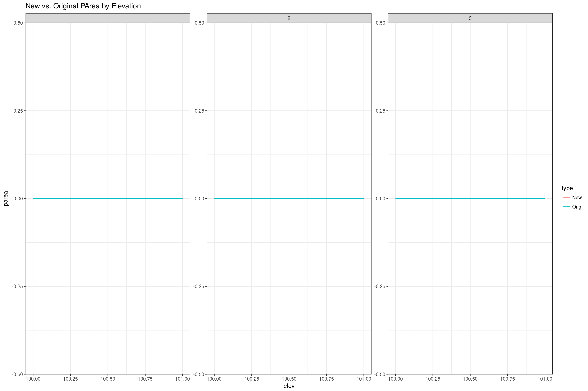
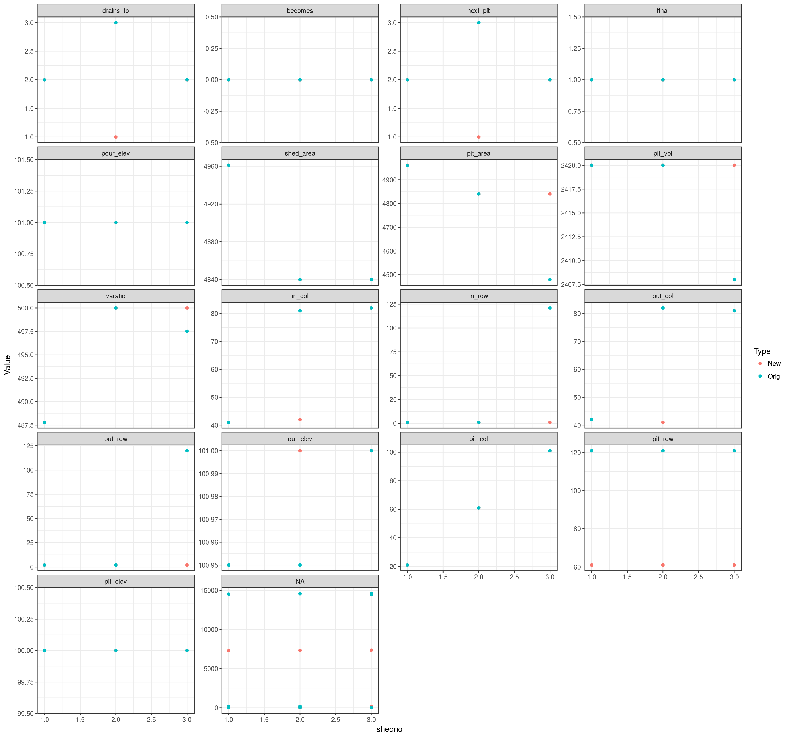
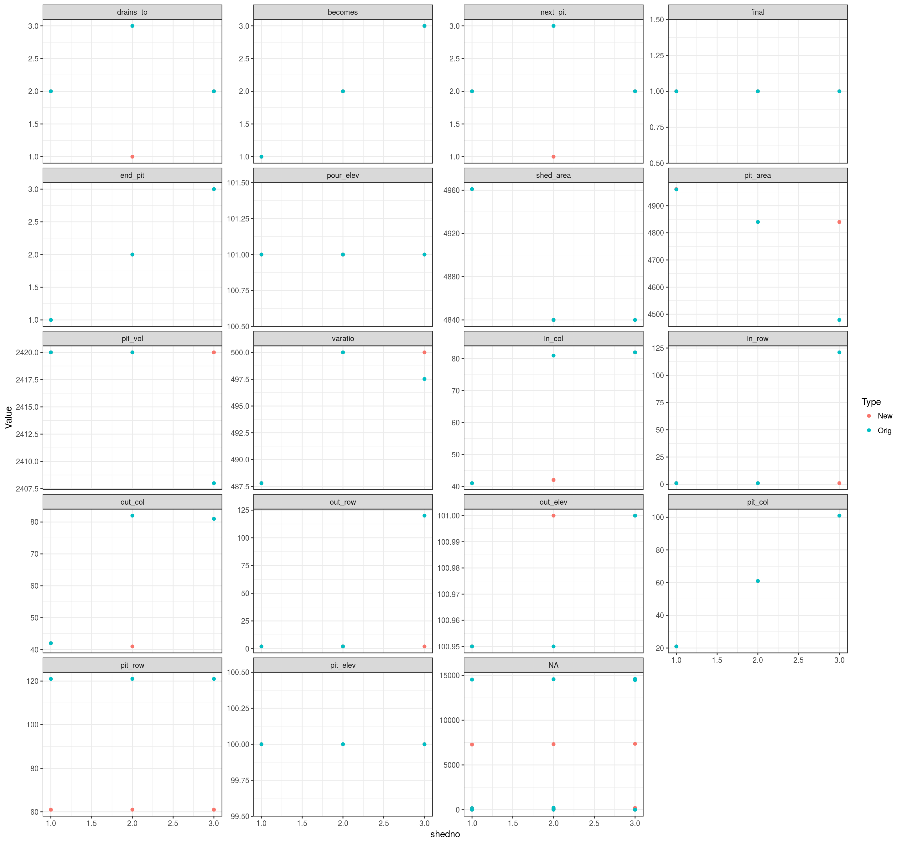
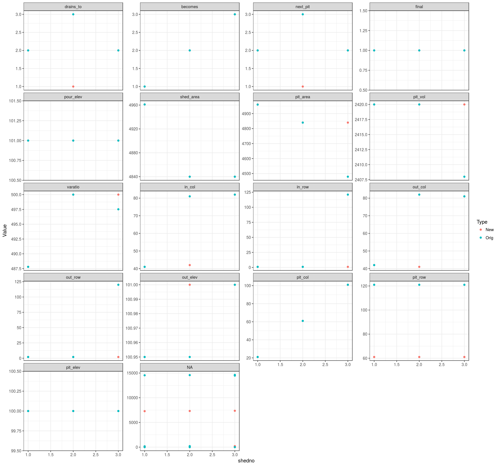
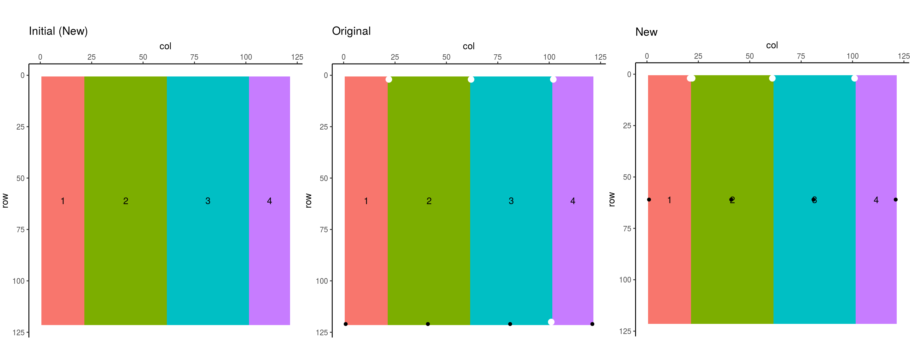
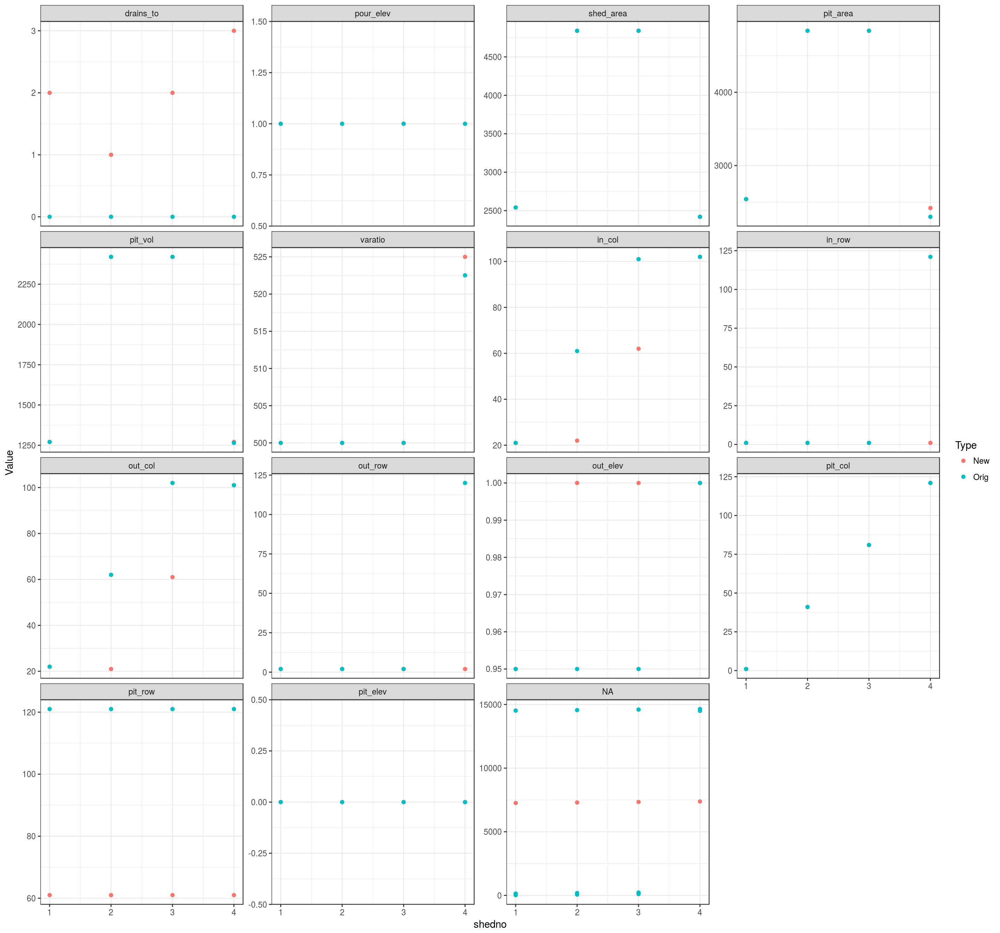

Original Pond data
New Pond dataDifferences

Original Fill data
New Fill data
Differences

Original Pit data
New Pit data
Differences


Original Inverted Pit data
New Inverted Pit data
Differences
## Warning: Removed 8 rows containing missing values (geom_point).